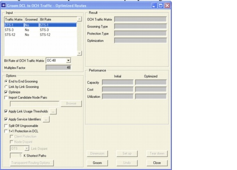
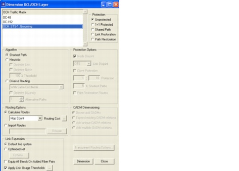
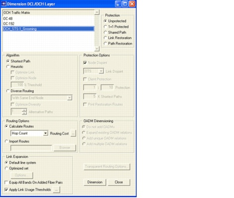
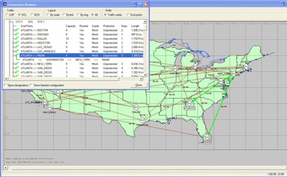

Network Design Operations > Grooming DCL to OCH Traffic
Grooming DCL to OCH Traffic
Routing non-native OCH traffic creates a logical DCL topology. This topology can be used for routing DCL traffic in a bottom-up approach: first traffic in the lower (OCH) layer is routed and the resulting logical topology in the upper (DCL) layer is used for routing DCL traffic. Another approach is referred to as top-down. In this approach, dimensioning of the DCL layer drives the demand for the OCH layer, which can subsequently be dimensioned. The top-down approach is called grooming in SP Guru Transport Planner. Grooming determines a logical DCL topology and maps this logical topology on the wavelengths of the OCH layer. SP Guru Transport Planner supports four grooming strategies:
Each of these grooming strategies results in a different logical DCL topology. Basic end-to-end grooming results in a fully meshed DCL topology, in which no electrical switching at the DCL layer occurs. Basic link-by-link grooming results in a logical DCL topology that mirrors the fiber topology, and in which electrical switching occurs in every intermediate node. Both optimized end-to-end grooming and optimized link-by-link grooming start from the corresponding basic strategies and evolve to a solution in which the logical DCL topology is a cost-optimized result which balances the cost of electrical and optical switching.
Procedure 3-6 Grooming DCL to OCH Traffic
- Open the WDMGuru_Examples project.
- Select File > Open....
- Select the WDMGuru_Examples project, then press Open.
The example project, which contains multiple scenarios, is loaded. The Australia scenario appears in the workspace.
- Select Scenarios > Switch To Scenario > USA to view the USA scenario in the workspace.
- Groom the SONET/SDH traffic matrix.
- Select the Design > Groom DCL to OCH Traffic > Optimized Routes... dialog box.
- Select the STS-1 DCL traffic matrix in the traffic matrix table. Select OC-48 as target bit rate for the OCH traffic matrix in which you want to carry the DCL traffic.
This results in a multiplex factor of 48, indicating the granularity of the OCH signal versus one unit of the DCL signal.
- Select End to End Grooming and select Optimize to perform optimized end-to-end grooming (do not put a checkmark next to 1+1 Protection in DCL).

- Press Groom.
The Grooming Optimization Progress dialog box appears.
- When the status is Finished, close the dialog box.
The results of the grooming action are shown on the right side of the Grooming DCL to OCH Traffic – Optimized Routes dialog box. The OCH_STS-1_Grooming traffic matrix contains the optical channels that are used to create the logical DCL links. The Capacity field indicates the number of needed optical channels, while the Utilization field indicates how well the capacity is used by the DCL traffic that is groomed in these optical channels.

- Dimension the OCH layer for the traffic matrix resulting from the grooming action:
- Click the Dimension button in the Groom DCL to OCH Traffic – Optimized Routes dialog box.
The Dimension DCL/OCH Layer dialog box appears.
- Select the traffic matrix OCH_STS-1_Grooming and choose Unprotected (Protection Type), Shortest Path (Algorithm), as routing cost Hop Count (Routing Cost), and Default line system (Link Expansion).

- Click Dimension.
The OCH traffic resulting from the grooming action (OCH_STS-1_Grooming) and the groomed DCL traffic matrix STS-1 are now accommodated in the network.
- Close all windows.
- Click the DCL button on the toolbar to inspect the DCL layer view.
- Inspect the routed connections.
- Select Network > Connection Browser.
- Select the DCL for Traffic, All for the Layout, and Traffic Matrix for the Order.
- Expand the STS-1 traffic matrix (using the + icon) and inspect the routes of this traffic matrix.
By using the tool bar button to switch the view between the OCH and DCL layer, you can inspect the routes in both layers. Inspecting a DCL route in the OCH layer reveals the path taken in the OCH layer.

- Close the project.
End of Procedure 3-6
| Home © 1987-2007 OPNET Technologies, Inc. All Rights Reserved. This software may be covered by one or more U.S. Patents. See complete patent notice in the Legal Notices section. OPNET Support Center |